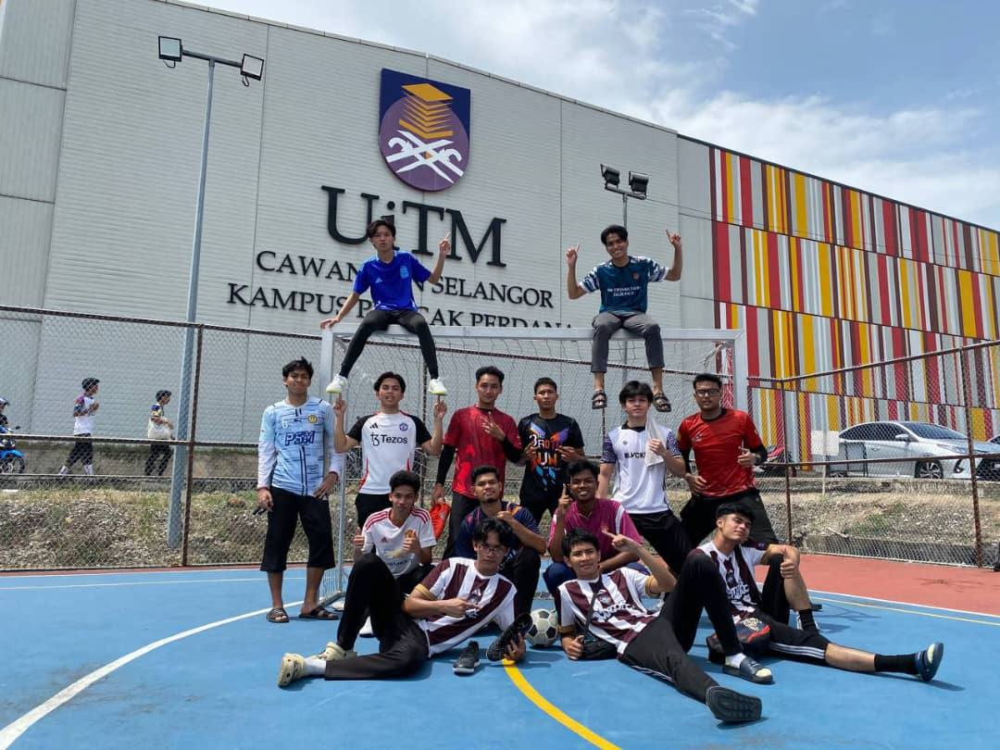
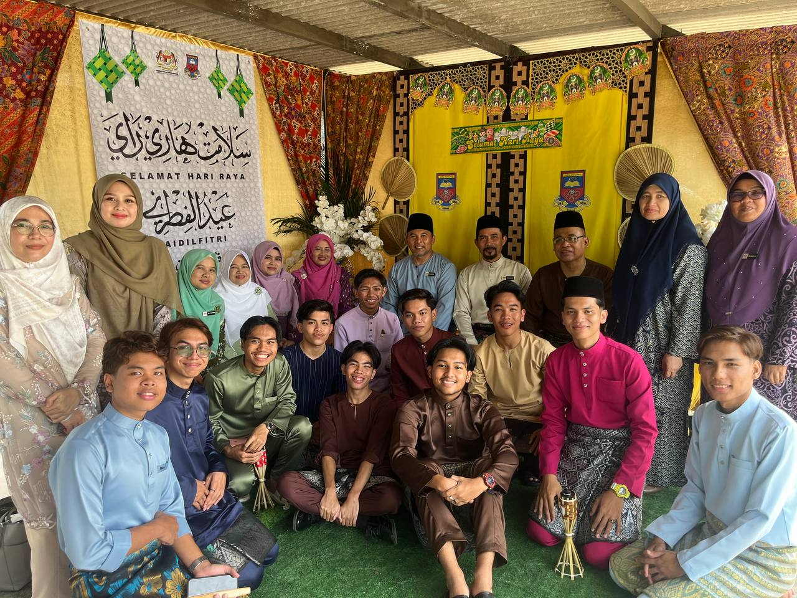
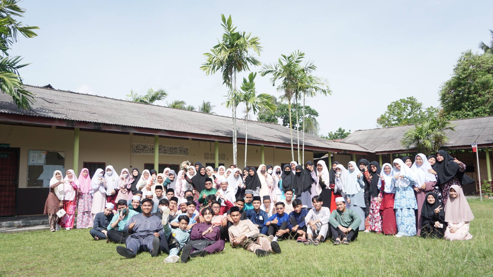

Universiti Teknologi MARA
Programme: Bachelor in Information Management. Relevant subjects include web design, information systems, Introduction to Metadata, and Introduction to Management.

INFORMATION MANAGEMENT STUDENT
Academic journey
My education has shaped my ability to manage information, complete assignments carefully, and communicate ideas through digital platforms.
Programme: Bachelor in Information Management. Relevant subjects include web design, information systems, Introduction to Metadata, and Introduction to Management.

Developed academic writing, presentation confidence, research habits, and group project experience.

Built early discipline through coursework, co-curricular activities, and examination preparation.

| Area | What I Learned | Use in Career |
|---|---|---|
| Web Design | HTML5, CSS3, JavaScript, layout planning | Create accessible digital content |
| Information Management | Organizing and presenting information | Support structured workplace decisions |
| Communication | Writing, teamwork, presentation | Work clearly with different people |